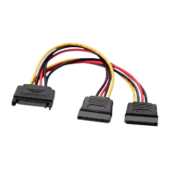
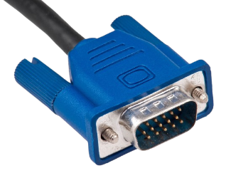
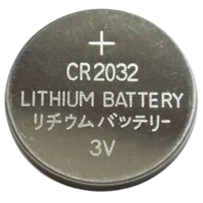
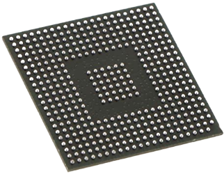
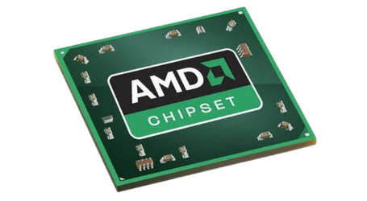
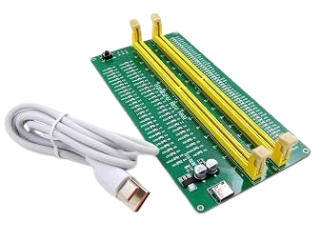
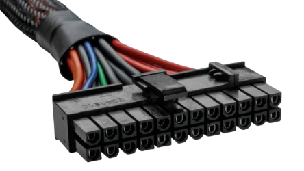
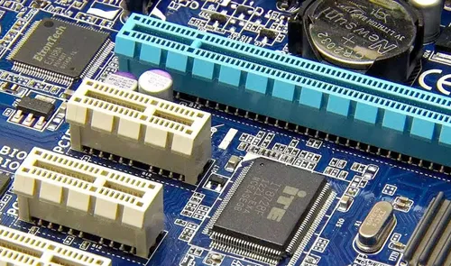

• 1. Slots PCI •Son unas ranuras que se encuentran en la placa base y sirven para conectar tarjetas de expansión. Por ejemplo, tarjetas de sonido, de red o tarjetas gráficas. Permiten añadir nuevas funciones al ordenador. |

• 2. Conexiones SATA •Son conexiones que permiten conectar dispositivos de almacenamiento, como discos duros y unidades SSD o lectores de DVD. Sirven para transmitir datos entre estos dispositivos y la placa base. |

• 3. Conexiones externas •Son los puertos que se encuentran normalmente en la parte trasera del ordenador. Permiten conectar dispositivos externos, como teclados, ratones, monitores, impresoras y memorias USB. |

• 4. Pila de la BIOS •Es una pequeña pila que se encuentra en la placa base. Su función es mantener la hora y la fecha del ordenador y conservar algunos ajustes de la BIOS cuando el equipo está apagado y desconectado de la corriente. |

• 5. Socket del microprocesador •Es el espacio de la placa base donde se instala el procesador (CPU). Se encarga de conectar el procesador con el resto de los componentes del ordenador para que puedan intercambiar información. |

• 6. Chipset •El chipset es un conjunto de circuitos electrónicos de la placa base que se encarga de gestionar la comunicación entre los diferentes componentes del ordenador, como el procesador, la memoria RAM y los dispositivos de almacenamiento. Ayuda a que todos los componentes trabajen correctamente y puedan intercambiar información. |

• 7. Slots de memoria RAM •Son las ranuras donde se colocan los módulos de memoria RAM. Esta memoria almacena temporalmente los datos y programas que está utilizando el ordenador, permitiendo que funcione de manera rápida. |

• 8. Conector de la fuente de alimentación •Es el conector que une la fuente de alimentación con la placa base. Su función es proporcionar la energía eléctrica necesaria para que los componentes del ordenador puedan funcionar correctamente. |

• 9. Slots PCI-e (PCI Express) •Son ranuras de expansión de la placa base que permiten conectar componentes de alto rendimiento, como tarjetas gráficas, tarjetas de sonido y tarjetas de red. Ofrecen una conexión rápida para transmitir datos entre estos dispositivos y el ordenador. |
